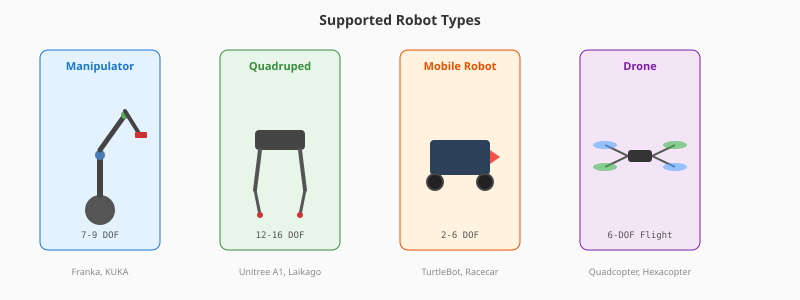

RoboSim — Open Robotics Simulation Platform
A free, browser-based robotics simulation environment for designing, testing, and validating robot control systems without physical hardware. Built for the Kiro BuildFest Hackathon 2026 (AWS).
🌐 Live Demo 📦 GitHub Repository 📄 Technical Documentation
Project Overview
Robotics simulation is dominated by tools requiring expensive hardware and proprietary licenses. NVIDIA Omniverse Isaac Sim needs an RTX GPU and 30GB+ disk space. Gazebo requires a full ROS installation on Linux. RoboSim eliminates these barriers — open a URL, pick a robot, test your algorithm. No install, no GPU, no cost.
| NVIDIA Omniverse | RoboSim | |
|---|---|---|
| Cost | RTX GPU + license required | Free, runs in any browser |
| Setup | Heavy install (~30GB) | Zero install — open a URL |
| Access | Desktop only | Any device with a browser |
| Robot Format | USD (proprietary extensions) | URDF (industry standard) |
| Target | Enterprise with GPU clusters | Anyone — students to startups |
Core Features

🤖 10 Verified Robot Models
Franka Panda, KUKA iiwa, Unitree A1, TurtleBot3, MIT Racecar, and more from the PyBullet/ROS ecosystem.
⚡ Real-Time Physics
240Hz simulation with WebSocket streaming at 60Hz. Forward kinematics with cumulative rotation matrices.
✏️ Algorithm Editor
Write and execute control algorithms directly in the browser with preset examples (wave, sweep, gait patterns).
🏭 Environment Presets
Warehouse, tabletop, outdoor environments with simulated 360° LiDAR sensor visualization.
🚁 Multi-Robot Support
Manipulator arms, quadrupeds, mobile robots (differential/Ackermann/omni), and drones with 6-DOF flight dynamics.
📦 One-Click Scenarios
Pick & Place, Warehouse Sorting, Quadruped Navigation, Drone Survey — auto-loads environment + robot + algorithm.
Supported Robot Types
| Robot | Category | DOF | Manufacturer |
|---|---|---|---|
| Franka Emika Panda | Manipulator | 9 | Franka Emika |
| KUKA iiwa 14 | Collaborative | 7 | KUKA |
| TurtleBot3 Burger | Mobile | 2 | ROBOTIS |
| Clearpath Jackal | Mobile (UGV) | 4 | Clearpath Robotics |
| MIT Racecar | Mobile (Ackermann) | 6 | MIT |
| Unitree A1 | Quadruped | 12 | Unitree |
| Unitree Laikago | Quadruped | 12 | Unitree |
| Ghost Minitaur | Quadruped | 16 | Ghost Robotics |
| R2D2 | Articulated | 8 | PyBullet |
| Cart-Pole | RL Benchmark | 2 | Classic |
Architecture

Built with Clean Architecture and Domain-Driven Design (DDD) principles, separating business rules from infrastructure:
Domain Layer (zero dependencies)
├── Robot, Joint, Link, Sensor, Actuator
├── Drone, MobileRobot
├── World, PhysicsConfig, SimulationState
└── ManipulationTask, GraspableObject
Infrastructure Layer (adapters)
├── SimplePhysicsEngine (pure Python FK)
├── PyBulletEngine (full dynamics, production-ready)
├── URDFLoader, DronePhysics
└── ROSBridgeServer (rosbridge v2.0 protocol)
Interface Layer (API + Frontend)
├── FastAPI REST + WebSocket
├── Three.js 3D visualization
└── Model Library with curated catalogTech Stack
| Layer | Technology | Rationale |
|---|---|---|
| Backend | Python 3.11 / FastAPI | Async WebSocket + rapid development |
| Physics | Custom engine (PyBullet-ready) | Zero-dependency, runs on free tier |
| Frontend | Three.js (vanilla JS) | No build step, instant load |
| Deployment | Render.com | Free, auto-deploy from GitHub |
| Testing | pytest (62 tests) | Enterprise-grade validation |
| Development | Kiro by AWS | AI-powered IDE for rapid iteration |
Development Timeline
- Day 1: Domain models, physics engine, URDF parser, REST API
- Day 2: Three.js frontend, WebSocket streaming, model library, drone/mobile robot physics
- Day 3: Scenarios, environments, LiDAR simulation, algorithm editor, 62 tests, deployment
Key Outcomes
- ✅ 62 automated tests passing (unit + integration)
- ✅ 10 verified open-source robot models
- ✅ Real-time 240Hz physics with 60Hz WebSocket streaming
- ✅ Mobile-responsive design
- ✅ Publicly deployed and accessible worldwide
- ✅ ROS bridge scaffolded for future ROS2 integration
Future Roadmap
- AWS Bedrock integration for AI-powered robot programming
- ROS2 bridge for connecting real ROS nodes to the simulator
- Collision detection and contact physics
- Multi-user collaborative sessions
- GPU-accelerated physics via AWS
Built with Kiro — the AI-powered development environment by AWS. Special thanks to the AWS team for providing credits through the Kiro BuildFest hackathon.